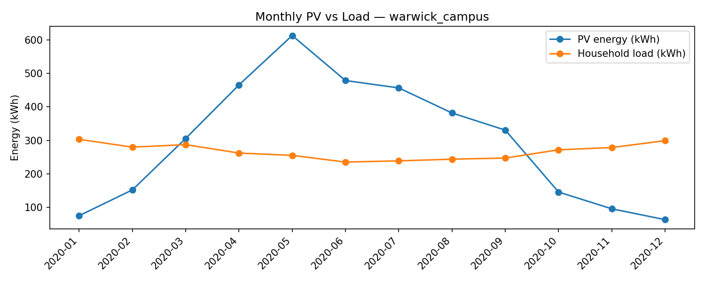
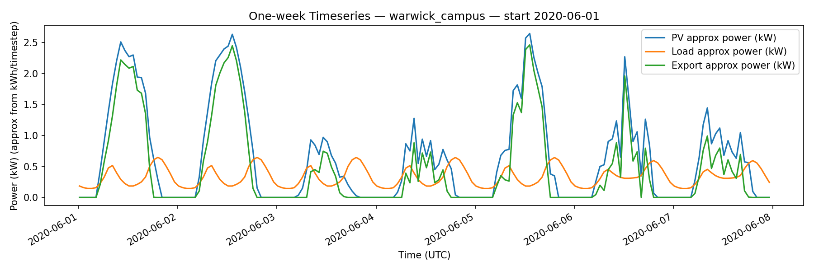
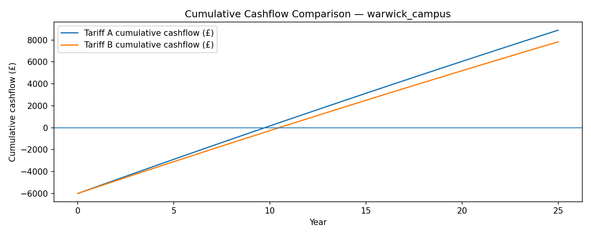

This report is standalone inside the run folder. Links and images use relative paths.
| Metric | Value |
|---|---|
Annual PV generation | 3,561 kWh |
Annual load | 3,200 kWh |
Self-consumed PV | 1,187 kWh |
Exported PV | 2,374 kWh |
Self-consumption (%) | 33.3% |
Self-sufficiency (% of load met by PV) | 37.1% |
Annual savings (Tariff A) | £688.53 |
Annual savings (Tariff B) | £645.74 |
Payback (Tariff A) | 10.0 |
Payback (Tariff B) | 11.0 |
NPV (Tariff A) | £2,488.57 |
NPV (Tariff B) | £1,889.10 |
outputs/plots/monthly_pv_vs_load.png

outputs/plots/week_timeseries.png

outputs/plots/cumulative_cashflow.png

| Config key | Value |
|---|---|
analysis_window.end | 2020-07-31 |
analysis_window.mode | full_year |
analysis_window.start | 2020-07-01 |
finance.capex | 6000.0 |
finance.degradation | 0.005 |
finance.discount_rate | 0.05 |
finance.lifetime_years | 25 |
finance.om_frac | 0.01 |
load.annual_load_kwh | 3200.0 |
load.profile | away_daytime |
load.week_days | 7 |
load.week_start | null |
location.force_download | False |
location.lat | 52.384 |
location.lon | -1.5615 |
location.name | warwick_campus |
location.year | 2021 |
meta.created_at_local | 2026-02-17T18:35:31 |
meta.notes | |
meta.run_id | 2026-02-17_1835_warwick_campus_system4kw_load3200_v6 |
outputs.export_daily | False |
outputs.export_hourly | False |
outputs.export_monthly | True |
plot_flags.annual_cashflow_bars | False |
plot_flags.cumulative_cashflow | True |
plot_flags.energy_split | False |
plot_flags.monthly_pv_vs_load | True |
plot_flags.week_timeseries | True |
pv.inverter_ac_kw | null |
pv.inverter_eff | 0.96 |
pv.loss_frac | 0.14 |
pv.noct | 45.0 |
pv.system_kw | 4.0 |
pv.temp_coeff | -0.004 |
tariff_mode | compare |
tariffs.peak_end | 19 |
tariffs.peak_start | 16 |
tariffs.tariffA_export | 0.15 |
tariffs.tariffA_import | 0.28 |
tariffs.tariffB_export | 0.15 |
tariffs.tariffB_offpeak | 0.22 |
tariffs.tariffB_peak | 0.35 |
version | 2.0 |
All files in this run folder (relative paths):
PV data is sourced from PVGIS (European Commission JRC).
Provenance file: data/pvgis_request.txt
Data Source: PVGIS (JRC) — via pvlib.iotools.get_pvgis_hourly Timestamp (UTC): 2026-02-17T18:35:31+00:00 PVGIS base URL: https://re.jrc.ec.europa.eu/api/v5_2/ PVGIS endpoint: hourly time series (via pvlib.get_pvgis_hourly) Requested parameters: - latitude: 52.384 - longitude: -1.5615 - start_year: 2021 - end_year: 2021 - surface_tilt: 0 - surface_azimuth: 180 - components: True - pvcalculation: False - map_variables: True - timeout_seconds: 60 Cache/source used by pipeline: cache:raw_warwick_campus_2021_lat52p384_lonm1p5615.csv Data range (UTC): 2020-01-01 00:11:00+00:00 to 2020-12-31 23:11:00+00:00 Repro steps (Python): 1) pip install pvlib pandas 2) from pvlib.iotools import get_pvgis_hourly 3) call get_pvgis_hourly(...) with the parameters above and url=PVGIS base URL
If present, see report/summary.md and logs.txt for detailed logs.
{kind=link}
{kind=link}
{kind=link}